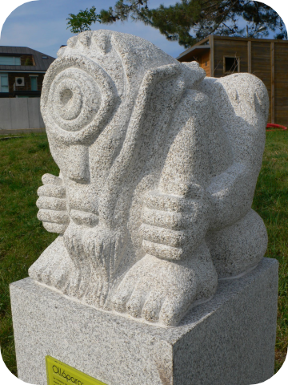
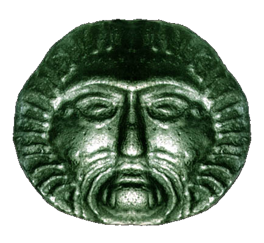
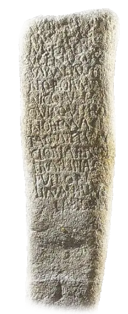

This is a matter of personal opinion and comparisons with other Celtic mythological cycles and stories. There is no agreed upon pantheon, this is a reconstructed list comparing Gods which appear in more than two mythologies which help conclude a Proto-Celtic origin. For respective mythologies, please consult the map. Furthermore, please note that the attestation tags do not mean that the specified God was worshipped in other Celtic areas, but that there is no attestation of them being worshipped there.
Universal
Tír nAill/Tír Tairngire/Tír na nÓg/Tír fo Thuinn/Tír na mBeo/Mag Mell/Mag Findargat/Mag Argatnél/Mag Ildathach/Mag Cíuin/Emain Ablach | Annwn/Annwfn | Albios/Dubnos | Terra das Xanas
Reserved
Gaelic
Welsh
Gaulish
Ogma | Eufydd fab Dôn | Ogmios
Ogmios is a God of eloquence, wisdom, and knowledge. His name means 'path', or 'guide', which according to Xavier Delamarre affirms his role as a psychopomp.
Ogmios guides the dead to the otherworld according to the Gauls, but has other powers which are seen in the form of curse tablets. He is likened to Hermes by the Romans.
According to Irish mythology Ogma created the Ogham script, and in other mythologies is the father of Tuireann/Taranis and dies in combat. He often appeaers with Lugh and the Dagda, suggesting a trio.
Welsh
Gaulish
Abellio/Abelio/Abelionni | Afallach/Aballac
Abellio's name comes from Proto-Celtic, "*aballo" (apple). Modern Welsh is afal or afallen, (apple and apple tree). He may have been a God of apple trees or fruits.
He is mentioned multiple times in Welsh mythology, and is the father of Modron/Maponos and son of Beli Mawr/Belenos.
He was heavily worshipped in the Pyrenees, with even Cathars being equated to being followers of Abellio.
Gaelic
Welsh
Hispano-Celtic
Bean sí | Angau/Ankou | Tongos
Anko's name comes from "*tungo-" (oath), or "*tanko-" (peace). He is associated with death, wells, and the otherworld.
Here is a description of the Anko by Antole Le Braz from the 19th century.
The Ankou is the henchman of Death (oberour ar maro) and he is also known as the grave yard watcher, they said that he protects the graveyard and the souls around it for some unknown reason and he collects the lost souls on his land. The last dead of the year, in each parish, becomes the Ankou of his parish for all of the following year. When there has been, in a year, more deaths than usual, one says about the Ankou:
The Irish banshee is similar, but instead she is female and is associated with lamenting death and wailing over deaths of people in her local village. She is also said to only wail for Irishmen of pure Milesian stock, furthering the hypothesis of Milesians being associated with the Celtic invasion into Ireland.
Every parish in Wales and Britanny has it's own Ankau similar to be Irish banshee, and we can assume that there are multiple Anko, or one with many forms.
Gaelic
Gaulish
Mac Gréine | Grannus
The name of Grannus comes from Irish "grian" (sun), and Proto-Celtic *greinā (sun). He is associated with spas, springs, and the sun. He is most likely the God of leisure.
Grannus was also likely celebrated in festivals, as an inscription in a fountain in Limoges mentions a Gaulish 10 night festival of Grannus.
In Irish mythology, his name is son of the Sun, and was a son of the Dagda/Allfather. He, along with his brothers killed Lug in revenge for their father.
Gaulish
Welsh
Arubianus/Arubinus | Arawn
Arubianus, literally meaning, "tiller" or "God of the plowed field". In Welsh mythology he has an association with the otherworld, meaning his etymology means tiller of the otherworld.
Arawn is the king of the otherworld realm of Annwn. Annwn's king is also associated with Gwyn ap Nudd, but because Arawn has a Gaulish cognate and so does Nudd, he is considered a seperate God.
In the Arthurian story Sir Gawain and the Green Knight, the interplay of Gawain, his host Bertilak (who is actually The Green Knight), and Bertilak's wife are very similar to the events of Pwyll and Arawn's encounter. In this case, Arawn seems to have been used as a basis for Bertilak/The Green Knight, while Gawain was very similar to Pwyll. The parallel between the Green Knight and Arawn extends to the treatment of the "newcomer." In both stories the Knight/Arawn's wife tries to sleep with the newcomer, but both remain loyal to the Knight/Arawn. In both stories as a result of their faithfulness, the newcomer is rewarded with the favor of the Knight/Arawn.
The character of Arawn Death-Lord in the series The Chronicles of Prydain by Lloyd Alexander is based on King Arawn from the Mabinogi. However, many of the characters traits are altered within these books, as Arawn is depicted as an evil ruler. The stories still retain the idea that he is king of the Otherworld, and that he is in a struggle to take over the land from another king. In this story Arawn is defeated by his foes instead of taking over his kingdom like in the Mabinogi. This could also be why another God is also associated with the otherworld.
Gaelic
Gaulish
Hispano-Celtic
Saint Ciarán/Conall Cernach/Crom Cruach | Cernunnos | Cornutus
Cernunnos, literally meaning, the "horned", or "antlered" one, was a widely worshipped God amongst all Celts. Even though he is not attested here, he bears similarities to Arawn due to his connections with the hunt, and might've been combined in Welsh mythology. Cernunnos is likely the God of nature, animals, and relations.
Some see the qualities of Cernunnos subsumed into the life of Saint Ciarán of Saighir, one of the Twelve Apostles of Ireland. When he was building his first tiny cell, as his hagiograph goes, his first disciple and monk was a boar that had been rendered gentle by God. This was followed by a fox, a badger, a wolf and a stag.
Conall Cernach could perhaps have some connection with Cernunnos. Not only because of his name, (having corners, similar to Proto-Celtic horn, etymology of modern day Cornwall), but primarily because of his role in Táin bó Fraích where he travels to the Alps and liberates cattle and treasure from a serpent, which he tames—seemingly a spot-on correspondence to Cernunnos' imagery on the Gundestrup Cauldron.
Crom Cruach, literally meaning, "crom", (bent, crooked, stooped), shows great relation to Cernunnos. He is described as a pre-Christian pagan God of Ireland which was abolished by Saint Patrick. According to an Irish dinsenchas ("place-lore") poem in the 12th century Book of Leinster, Crom Cruach's cult image, consisting of a gold figure surrounded by twelve stone figures, stood on Magh Slécht ("the plain of prostration") in County Cavan, and was propitiated with first-born sacrifice in exchange for good yields of milk and grain.
In Gaulish iconography, he is commonly depicted with a stag and a serpent, similar to Conall. In Northern Iberian mythology, the Cuélebre is a giant serpent which is defeated by heroes similar to the story of Cernunnos.

Gaelic
Welsh
Hispano-Celtic
Balor | Ysbaddaden | Alláparo/Olláparo/Ojáncanu
Balor, meaning *Boleros, (the flashing one) is a one eyed cyclops who is described in Irish mythology to be the son of Neit/Neito.
Dáithí Ó hÓgáin espouses the interpretation that Balor personifies the harmful aspects of the sun, such as the scorching sun that would bring crop failure and drought. Both Ó hÓgáin and Máire MacNeill believe that Lugh's slaying of Balor was originally a harvest myth associated with the festival of Lughnasa and the later tale of Saint Patrick overcoming Crom Dubh. Ó hÓgáin also believes that the hero Fionn's conflict with figures named Goll (meaning "one-eyed"), Áed (meaning "fire") and Aillen (the burner) stems from Lugh's conflict with Balor.
Balor is also similar to the Ollaparo, as both have another eye in the back, which are both "evil". However, the Ollaparo and the Ojancanu are multiple giants, and in Cantabrian myth especially it describes how Ojancanu fight brown bears and fear Anjanas (faries, but probably old pagan Gods).
Ysbaddaden is a similar figure, being the chief of the giants as Balor was the "champion" of the Formorians. They both have eyelids that take several men or tools to lift and in both mythological stories have a spear thrown at them and loses one eye, and refuses to give away their daughter to the bridal-quester.

Welsh
Gaulish
Hispano-Celtic
Beli Mawr | Belenus | Belenos
Belenus meaning, "bhel" (shining), meaning literally (The Shining One). He is considered a sun God, and rides the Sun across the sky in a horse-drawn chariot. He is married to Belisima in Gaulish mythology.
He is associated loosely with Beltane, drawing some parallels with Grannus and his festival and the sun. They could be the same God with different forms.
Beli Mawr is a great king in Welsh mythology, being the last king of Pre-Roman Britain and wife of Anna, who is the Virgin Mary's cousin.

Gaulish
Hispano-Celtic
Borvo/Bormo/Bormanus/Bormanicus/Borbanus/Boruoboendua/Bandua/Vabusoa/Borus
The variants Borus ~ Borvo ~ Bormo ~ Bormanus seem to be based on a root *boru-. This root in turn is thought to be a variant of the Proto-Celtic root *beru- ‘boil’ and may have meant ‘to bubble.’ Cognate with the names is the Welsh berw ‘boiling.’ and the Goidelic bruich, 'boil, cook'.
The Proto-Celtic forms of the name variants most probably were *Boru-s, *Borwon-, *Borumāno-s and *Borumān-iko-s and the names most probably meant the ‘Bubbler.’ The base of these names is furthermore the source of the name of the River Barrow. In Irish, the river is called Bearú, the ‘Boiling, Bubbling’ and in Irish mythology it was Dian Cecht, a great healer of the Tuatha Dé Danann, who first caused the river to ‘boil’. *Borvo- is the stem Macbain reconstructs for the Irish borbhan, ‘a purling sound,’ and which he also relates to the Welsh berw, ‘seethe,’ French Bourbon and the Latin fervo, ‘boil’.
Boru was commonly associated with Apollo, due to his healing attributes and is described as the God of minerals, healing, and bubbling spring water.